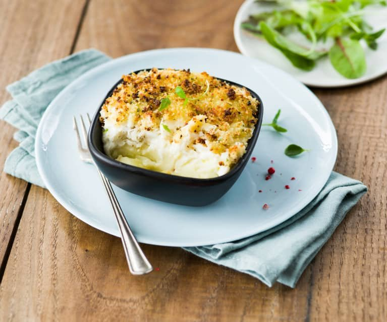

Parmentier de poisson au chèvre et persillade
Ingredients
- 550 g d'eau
- 15 g de gros sel
- 600 g de pommes de terre
- 300 g de filets de poisson blanc
- 60 g de beurre
- 60 g de lait demi-écrémé
- 150 g de chèvre frais
- 1 pincée de sel
- 1 pincée de poivre
- 1 gousse d'ail
- 1 bouquet de persil plat
- 50 g de chapelure
- 1 c. à s. d'huile d'olive

Préparation
Étape 1
Mettre 550 g d'eau et 15 g de gros sel dans le bol, 600 g de pommes de terre en morceaux dans le panier et 300 g de filets de poisson blanc (cabillaud) dans le Varoma. Cuire à la vapeur 25 min/Varoma/vitesse 1. Vider le bol.
Étape 2
Remettre les pommes de terre avec 60 g de beurre et 60 g de lait demi-écrémé, écraser 3 min/90ºC/sens inverse/vitesse 2, sans le gobelet. Étaler dans un plat beurré.
Étape 3
Mélanger le poisson, 150 g de chèvre frais, 1 pincée de sel et 1 pincée de poivre 20 sec/sens inverse/vitesse 1.5. Étaler sur la purée.
Étape 4
Préchauffer le four à 200ºC. Mixer 1 gousse d'ail, 1 bouquet de persil plat et 50 g de chapelure 8 sec/vitesse 6.
Étape 5
Parsemer la persillade sur le poisson et arroser de 1 c. à s. d'huile d'olive. Gratiner 35min à 200ºC.
Conseils
- Un chèvre affiné donne un goût plus prononcé.